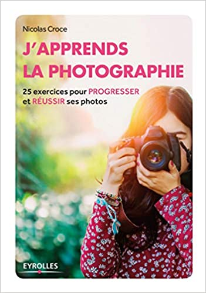

Pour progresser en photographie, il faut prendre des photos... beaucoup de photos, et avoir un peu de méthode ! Or quand on ne peut s'offrir des cours et que le jargon des livres techniques nous effraye, il n'est pas rare de se décourager.
Ce livre très accessible, particulièrement destiné aux débutants, propose 25 exercices concrets qui recouvrent quatre grands thèmes de la photo : les bases techniques, la lumière, la mise en valeur de son sujet et la créativité bien sûr, car il s'agit de se faire plaisir et de rester motivé ! Très illustré, émaillé de nombreux conseils, il vous guidera dans la découverte de la photo et vous aidera à progresser rapidement, et ce quel que soit votre appareil (compact, reflex ou smartphone).
.
STOCK=13
PRIX:10$
